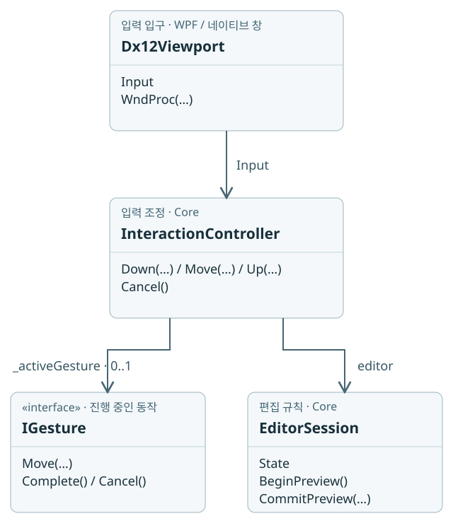
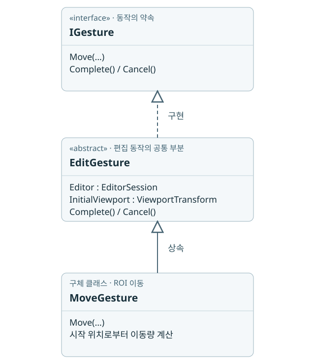
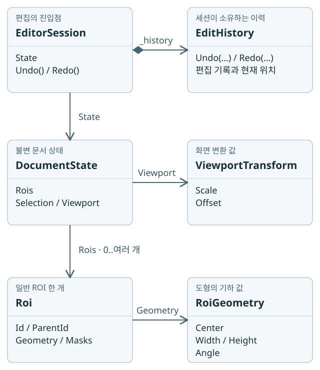

04. 책임을 나누는 설계
SOLID와 GRASP를 실제 파일에 연결하기
먼저 이 장면 하나만 생각하세요
ROI를 옮기는 일을 네 객체에 나눠 맡겨 봅시다
마우스를 오른쪽으로 끌자 ROI도 움직였습니다. 이 일을 버튼 코드 하나에 전부 쓰면 입력 장치, 이동 계산, 문서 저장, 화면 표시가 한데 섞입니다. 먼저 각 객체가 받을 일과 돌려줄 결과를 나눕니다.
기억할 한 문장클래스 이름보다 먼저, 그 객체가 맡은 일 한 문장을 말할 수 있어야 합니다.
- 입력 전달과 도구 선택
Dx12Viewport는 입력을 전달합니다. InteractionController는 지금 할 일이 이동인지, 회전인지, 선택인지 고릅니다.
- 이동량 계산
MoveGesture는 드래그 시작점과 현재 점을 보고 이동량을 구합니다. 파일 디코딩이나 GPU 자원 해제는 맡지 않습니다.
- 문서와 이력 관리
EditorSession은 편집 상태와 확정·취소·이력을 관리합니다. 바뀐 상태는 별도 표시 경로로 화면에 전달됩니다.
잠깐, 답을 보기 전에 예상해 보세요
새 파일 형식을 읽게 하려면 MoveGesture의 이동 계산도 고쳐야 할까요?
예상과 비교하기
아닙니다. 파일 로딩과 이동 계산은 바뀌는 이유가 다릅니다. 파일 구현을 영상 계약 뒤에 두면 이동 쪽은 같은 원본 좌표를 계속 사용합니다. 아래 관계도에서 이 경계를 먼저 보고 SOLID·GRASP의 이름을 연결해 보세요.
먼저 객체를 구별하기: 창, 입력 담당자, 문서, 도형
도면 편집기를 만든다고 생각하세요. 종이는 DocumentState, 종이에 기록한 부품 하나는 Roi, 그 부품의 모양과 위치는 RoiGeometry입니다. 마우스는 종이를 직접 고치지 않습니다. InteractionController가 “지금은 이동 중”이라는 작업을 고르고 EditorSession에 편집을 요청합니다. 창은 결과를 화면에 보여 줍니다.
비유의 한계도 있습니다. 문서는 실제 종이처럼 같은 메모리를 계속 덮어쓰는 물건이 아닙니다. 불변 상태를 만들고 기존 자료를 공유하며, 이동·회전 중에는 공통 변환을 별도로 보관합니다. 이력도 매번 모든 ROI 배열을 복사하는 구현이라고 생각하면 안 됩니다.
클래스 관계도는 세 번에 나누어 읽습니다
① 입력을 누가 받는가 → ② 이동 동작을 어떻게 구현하는가 → ③ 결과를 어떤 객체에 보관하는가. 한 그림에서 모든 선을 따라갈 필요가 없습니다. 같은 이름이 다시 나오면 같은 타입을 다른 관점에서 다시 보여 주는 것입니다.
읽는 법: 상자는 타입이며, 위쪽은 이름, 아래쪽은 대표 멤버입니다. 실선의 열린 화살촉은 “상대 타입을 사용하거나 값으로 가진다”입니다. 빈 삼각형은 부모 타입을 향하며, 점선이면 인터페이스 구현, 실선이면 클래스 상속입니다. 채운 마름모는 이력을 소유하는 세션 쪽에 붙습니다. 색을 구별하지 않아도 선 모양과 설명으로 읽을 수 있습니다. 모든 멤버를 나열한 API 명세는 아닙니다.
① 입력 연결 — 마우스를 움직이면 누가 받나요?
위에서 아래로 읽습니다. 컨트롤러 아래의 두 가지는 실행 순서가 아니라 컨트롤러가 알고 있는 두 상대입니다.

Dx12Viewport.Input은 입력을 받을 컨트롤러를 가리킵니다. 기본 편집 연결을 그렸으며 별도PointerInput을 주입하는 경로는 생략했습니다.InteractionController._activeGesture에는 진행 중인 동작이 최대 하나 들어갑니다. 0..1은 입력 중이 아닐 때 null일 수 있다는 뜻입니다.- 생성자로 전달받은
editor는 편집 세션입니다. 컨트롤러는 문서 값을 직접 덮어쓰는 대신 세션의 기능을 사용합니다.
Mermaid이 그림의 Mermaid 원문
classDiagram
direction TB
Dx12Viewport --> InteractionController : Input
InteractionController --> IGesture : _activeGesture 0..1
InteractionController --> EditorSession : editor
② 제스처 상속 — 이동·회전이 공유하는 일은 무엇인가요?
이번에는 아래에서 위로 읽습니다. MoveGesture는 EditGesture의 한 종류이고, EditGesture는 IGesture의 약속을 구현합니다. 이 화살표는 호출 순서가 아닙니다.

IGesture는 “움직이기·끝내기·취소하기”라는 약속만 정합니다.EditGesture는 편집 세션과 시작 뷰포트를 기억하고 확정·취소를 공유합니다.abstract이므로 이것만으로 새 동작 객체를 만들지는 못합니다.MoveGesture가 실제 이동량 계산을 맡습니다. 같은 부모를 쓰는RotateGesture,ResizeGesture,RepeatedResizeGesture도 각각 회전·크기 변경을 계산합니다. 이 세 타입은 선을 겹치지 않도록 그림에서 생략했습니다.
EditGesture.Editor는 ①의 세션과 연결됩니다. Controller도 보관하며 확정 요청은 컨트롤러를 거쳐 앱의 준비 콜백 또는 세션으로 전달합니다. 모든 IGesture 구현이 이 부모를 쓰는 것은 아닙니다. 예를 들어 PanGesture는 IGesture를 직접 구현합니다.
Mermaid이 그림의 Mermaid 원문
classDiagram
direction TB
IGesture <|.. EditGesture : implements
EditGesture <|-- MoveGesture : inherits
③ 문서 구조 — 움직인 결과는 어디에 남나요?
왼쪽을 위에서 아래로 읽고, 각 행에서 오른쪽을 봅니다. 편집 세션 → 문서 → ROI가 큰 흐름이고, 오른쪽에는 각각의 이력·화면 변환·도형 값이 있습니다.

EditorSession.State가 현재 문서 상태입니다._history는 세션이 생성하고 소유하는 이력 객체입니다.DocumentState.Rois는 ID로 일반 ROI를 찾는 불변 사전입니다. 0..여러 개는 문서가 비었을 수도, 여러 일반 ROI를 담을 수도 있다는 뜻입니다.Viewport는 그 문서를 화면에 보여 줄 확대·이동 값입니다.Roi.Geometry는 중심·크기·각도 등 도형의 값입니다.ParentId는 부모 ROI의 ID이며 부모 객체 전체를 복사해 넣는 필드가 아닙니다.
이 그림의 Rois는 일반 ROI 경로입니다. 반복 격자는 별도 RepeatedRois와 압축 선택으로 표현하므로, 1억 개를 이 사전에 하나씩 담는다고 읽으면 안 됩니다. 선택·마스크·반복 격자의 상세 구조는 5장에서 이어집니다. 화살표도 전체 깊은 복사를 의미하지 않습니다.
Mermaid이 그림의 Mermaid 원문
classDiagram
direction TB
EditorSession *-- EditHistory : _history
EditorSession --> DocumentState : State
DocumentState --> ViewportTransform : Viewport
DocumentState --> Roi : Rois 0..many
Roi --> RoiGeometry : Geometry
| 실제 위치 | 소유하는 정보 / 호출하는 상대 | 수정할 때의 질문 |
|---|---|---|
src/VisionCanvas/Controls/Dx12Viewport.cs | 네이티브 자식 창, 입력 전달, RenderWorker 연결 | 물리 픽셀을 DIP로 바꿨는가? |
src/VisionCanvas.Core/Interaction/InteractionController.cs | 현재 도구·활성 제스처·초안 표시 | 도구와 선택 우선순위를 바꾸는가? |
Interaction/MoveGesture.cs 등 | 드래그 시작점·초기 뷰포트·각도 누적 | 시작점 기준인가, 이전 Move 기준인가? |
Editing/EditorSession.cs | 문서 상태·미리보기·EditHistory | 불변식과 한 번의 편집 기록을 지키는가? |
Editing/DocumentState.cs | Roi 선언, ROI 사전·선택·영상·뷰포트 | ROI ID와 형상 값은 다른가? |
src/VisionGeometry/RoiGeometry.cs | 기하 값과 Contains·Bounds | UI나 파일 타입 없이 계산할 수 있는가? |
src/TeachingToolWpf/ViewModels/MainWindowViewModel.cs | 주입된 편집·영상·검사 서비스 조정, 화면 상태·명령 게시 (구현체 조립은 App) | 앱 정책인가, 재사용 Canvas 규칙인가? |
class와 record: 작업하는 객체와 보관하는 값을 왜 나눌까요?
“Roi는 record인데 EditorSession은 왜 class죠? 둘 중 하나만 쓰면 안 되나요?” 먼저 record도 객체를 표현하는 타입이며, record라고만 선언하면 record class라는 참조 형식이라는 점부터 잡으세요. class의 반대말이 record인 것은 아닙니다.
편집 세션은 담당자, 문서 상태는 담당자가 들고 있는 도면이라고 생각해 보세요. ROI 이름을 바꾸어도 담당자를 새로 채용하지는 않습니다. 같은 EditorSession이 변경 요청을 처리하고, 새 DocumentState를 현재 도면으로 가리킵니다. 이전 도면의 ROI 정보는 남겨 두므로 되돌릴 재료가 있습니다. 비유에서 종이를 통째로 복사하는 장면은 빼세요. 실제 코드는 바뀌지 않은 자료를 공유합니다.
| 질문 | 일반 class | record / record class | readonly record struct |
|---|---|---|---|
| 변수에 무엇이 들어가나요? | 객체를 가리키는 참조 | 똑같이 객체를 가리키는 참조 | 값 자체. 대입하면 그 값이 복사됨 |
| 동등성의 기본 동작은? | 별도 재정의가 없다면 같은 객체인지 비교 | 컴파일러가 타입과 저장된 멤버 값에 기초한 동등성 코드를 생성 | 컴파일러가 값에 기초한 동등성 코드를 생성 |
| with로 일부만 바꾼 값을 만들 수 있나요? | 일반 class에는 record의 with 복사 기능이 없음 | 가능. 원본을 바꾸지 않고 복사본을 초기화 | 가능. 값 복사본을 초기화 |
| 선언만 하면 내부까지 불변인가요? | 아니요. get 전용 속성과 내부 자료 설계로 불변 class를 만들 수도 있음 | 아니요. set 속성이나 수정 가능한 내부 객체를 둘 수도 있음 | readonly여도 참조하는 내부 객체까지 불변이 되지는 않음 |
| 이 프로젝트의 예 | EditorSession, EditHistory, MoveGesture | Roi, RoiGeometry, DocumentState, RoiChange | ViewportTransform: 배율과 이동량 |
| 선택한 이유 | 세션·작업·이력의 진행 상태와 부작용을 명시적으로 관리 | 편집 전후 값을 표현하고 일부를 바꾼 새 상태를 만들기 편함 | 작은 좌표 변환 값을 하나로 전달 |
이 표는 “record에는 메서드를 넣으면 안 된다”는 규칙이 아닙니다. RoiGeometry도 포함 판정 같은 계산을 합니다. 반대로 DocumentEdit은 전후 데이터를 보관하면서 적용 규칙을 제공하는 class입니다. 데이터가 있다는 이유만으로 record로 바꿀 필요는 없습니다. DocumentState는 동등성도 직접 정의하므로 모든 record가 모든 내부 자료를 자동으로 깊이 비교한다고 생각하면 안 됩니다.
record가 무조건 빠르거나 스레드 안전한 것도 아닙니다. record class의 with는 새 객체를 만들고, 공유 자료의 안전성은 내부 타입에 달려 있습니다. readonly record struct도 크기가 크면 복사 비용이 커집니다. 현재 선택은 책임과 값의 의미를 분명히 하기 위한 것이며, 선언 하나로 성능을 보장하는 선택이 아닙니다.
왜 프로젝트를 여러 개로 나눌까
“버튼을 누르면 이미지를 여는 작은 앱인데 왜 프로젝트가 많을까요?” 바꾸려는 이유가 서로 다르기 때문입니다. 파일 형식을 추가할 때 좌표 회전 공식을 고칠 필요는 없습니다. 창의 모양을 바꿀 때 검사 점수식도 고칠 필요는 없습니다. 함께 바뀌는 일을 모으고, 따로 바뀌는 일 사이에 경계를 둡니다.
| 프로젝트 | 대답하는 질문 | 알면 안 되는 것 |
|---|---|---|
| VisionGeometry | 이 점은 도형 안인가? 어떻게 회전하나? | WPF, DX12, 검사 판정 |
| VisionImaging.Abstractions | 영상 크기·형식·타일·프레임의 계약은? | 실제 파일 코덱 |
| VisionCanvas.Core | 문서·선택·계층·입력·이력을 어떻게 바꾸나? | GPU 핸들, OpenCV Mat |
| VisionCanvas | 입력을 전달하고 화면에 무엇을 어떻게 그리나? | 검사 알고리즘, 제품 합불 기준 |
| VisionImaging | 파일의 원본 픽셀을 어떻게 읽나? | Canvas의 선택·이력 |
| VisionAlgorithm | 원본 픽셀에서 무엇을 검출하나? | WPF, Canvas, 앱 |
| VisionInspection | 원본 읽기와 검사 실행을 어떻게 연결하나? | WPF 표시 |
| TeachingToolWpf | 어떤 서비스와 화면을 연결하고 어떻게 판정하나? | 다른 프로젝트가 앱을 역참조하면 안 됨 |
이 표는 책임 지도입니다. 실제 참조 목록은 각 .csproj가 기준입니다. 선택형 CUDA는 VisionCompute.ILGPU, 필터 UI는 VisionCanvas.Filters.Wpf, 필터 계산은 IndustrialVision.Filters에 있습니다. Canvas의 파일 입력을 쓰지 않는 호스트는 NetVips를 필수로 붙일 이유가 없습니다.
‘이미지 열기’ 한 요청을 맡겨 보기
- 사용자가 버튼을 누릅니다. WPF는 요청과 진행 상태를 다룹니다.
- 파일 로더는 파일을 해석하고 영상 규격과 타일을 제공합니다. 화면 버튼을 알 필요가 없습니다.
- Canvas는 그 규격과 픽셀 계약으로 화면을 만듭니다. PNG 압축 규칙을 알 필요가 없습니다.
- 기하 코드는 원본 점과 화면 점을 변환합니다. 어떤 파일에서 온 점인지는 중요하지 않습니다.
식당에서 주문·조리·회계를 나누는 비유와 비슷하지만, 클래스마다 사람 한 명을 대응시키려는 것은 아닙니다. 핵심은 어떤 요구가 바뀌면 어떤 코드가 함께 바뀌는가입니다. 한 번 호출되는 덧셈까지 인터페이스로 쪼갤 이유는 없습니다.
작은 계약을 코드로 읽기
Canvas는 파일 형식별 네이티브 타입 대신 아래 계약을 사용합니다. Info는 영상 규격, Read는 한 타일 읽기, IDisposable은 해제 약속입니다. 렌더러가 디코더 종류를 몰라도 되므로 DIP·Protected Variations를 구체적으로 볼 수 있습니다. 구현은 취소와 버퍼 소유권까지 지켜야 하므로 메서드 이름만 맞추는 것으로 LSP가 성립하지 않습니다.
C#ITileSource: 소비자가 필요한 계약
public interface ITileSource : IDisposable
{
ImageInfo Info
{
get;
}
PixelBuffer Read(TileKey key, CancellationToken cancellationToken);
}현재 저장소 코드 · 발췌 · src/VisionImaging.Abstractions/TileSource.cs
C#src/VisionImaging.Abstractions/TileSource.cs
using System.Buffers;
namespace VisionImaging.Abstractions;
public enum PixelKind
{
Gray8, Gray16, Rgba32, Bgra32
}
public readonly record struct TileKey(int Level, int X, int Y);
public sealed record ImageInfo(string Key, string Name, int Width, int Height, PixelKind Pixels, int Levels)
{
public const int TileSize = 512;
public int BytesPerPixel => Pixels switch { PixelKind.Gray8 => 1, PixelKind.Gray16 => 2, _ => 4 };
public static int CalculateLevelCount(int width, int height)
{
var count = 1;
while (Math.Max(width, height) > TileSize)
{
width = (width + 1) / 2;
height = (height + 1) / 2;
count++;
}
return count;
}
}
/// <summary>A source is owned by the image worker. Reads and disposal must not overlap.</summary>
public interface ITileSource : IDisposable
{
ImageInfo Info
{
get;
}
PixelBuffer Read(TileKey key, CancellationToken cancellationToken);
}
/// <summary>One owner transfers or disposes this lease. GPU upload copies before releasing it.</summary>
public sealed class PixelBuffer : IDisposable
{
private byte[]? _buffer;
public int Width
{
get;
}
public int Height
{
get;
}
public int Stride
{
get;
}
public PixelKind Kind
{
get;
}
public int Length => checked(Stride * Height);
public byte[] Bytes => _buffer ?? throw new ObjectDisposedException(nameof(PixelBuffer));
public Span<byte> Span => Bytes.AsSpan(0, Length);
public PixelBuffer(int width, int height, PixelKind kind)
{
if (width <= 0 || height <= 0)
{
throw new ArgumentOutOfRangeException(nameof(width));
}
Width = width;
Height = height;
Kind = kind;
Stride = checked(width * (kind == PixelKind.Gray8 ? 1 : kind == PixelKind.Gray16 ? 2 : 4));
_buffer = ArrayPool<byte>.Shared.Rent(Length);
}
public void Dispose()
{
var owned = Interlocked.Exchange(ref _buffer, null);
if (owned is not null)
{
ArrayPool<byte>.Shared.Return(owned);
}
}
}현재 저장소 코드 · ../src/VisionImaging.Abstractions/TileSource.cs
9장에는 이 계약을 구현한 CheckerTileSource 전체와 창 연결 코드를 함께 넣었습니다.
저장소 지도를 실제 변경 요청으로 읽기
| 하고 싶은 일 | 먼저 읽을 파일 | 여기로 옮기면 안 되는 책임 |
|---|---|---|
| 마우스 선택 규칙 변경 | InteractionController.StartSelectionGesture | DX12 리소스 생성 |
| 부모·자식 이동 규칙 변경 | RoiHierarchy와 RoiTransforms | WPF 마우스 메시지 해석 |
| 타일 수·가시 영역 계산 | VisionCanvas/Imaging/TilePlanner.cs | 파일 코덱 종류 판별 |
| PNG/JPEG/TIFF/WebP 파일 읽기 | VisionImaging/Imaging/ImageLoader.cs → DiskPyramidSource → RawPyramidSource → NativeRasterDecoder | 문서 선택·Undo |
| 화면 제출·GPU 수명 | Dx12Viewport.Submit → RenderWorker → 렌더 리소스 | 검사 합불 정책 |
| 원본 영상 검사 | VisionInspection와 VisionAlgorithm | 표시 LOD로 원본 검사 대체 |
2026-10-14 현재 NetVips는 제거되었습니다. VisionImaging은 파일 로더의 공개 진입점을 유지하고, 실제 자체 피라미드/코덱 프로젝트는 experiments/VisionImaging.Pyramid와 experiments/VisionImaging.Codecs에 있습니다. 폴더 이름만 보고 “생산 코드에서 쓰지 않는다”고 판단하면 안 됩니다. 현재 프로젝트 참조를 따라가야 합니다.
클린 아키텍처를 적용한다는 말은 모든 클래스 앞에 인터페이스를 붙인다는 뜻이 아닙니다. 기하는 WPF를 몰라도 계산할 수 있고, 편집은 파일 코덱을 몰라도 테스트할 수 있으며, 앱은 실제 구현을 연결합니다. 새로운 변형이 없는 작은 계산은 직접적인 코드로 유지합니다.
원칙 이름과 연결하기 · SOLID 5개
SOLID 5개: 질문으로 읽기
“SOLID를 지켰다는 말을 실제 변경으로 확인할 수 있나요?” 타일 소스를 파일에서 합성 영상으로 바꾸는 상황을 생각하세요. 렌더러를 뜯어고치지 않고 바꿀 수 있는지, 새 소스도 취소와 버퍼 반환 약속을 지키는지 질문하면 원칙이 구체적인 리뷰 항목이 됩니다.
| 원칙 | 쉬운 뜻과 저장소의 예 | 리뷰 질문 |
|---|---|---|
| SRP · 단일 책임 | 바뀌는 이유를 모은다. TilePlanner는 주소 계산, TileWorker는 읽기와 수명. | 타일 좌표 계산 함수가 파일까지 열고 있나? |
| OCP · 개방/폐쇄 | 변형이 실제로 필요한 곳을 계약으로 확장. 다른 소스도 ITileSource 구현 가능. | 새 형식 때문에 Core에 PNG/TIFF 분기가 필요한가? |
| LSP · 치환 | 같은 약속의 구현은 교체해도 호출자의 기대를 지킨다. | 새 소스도 취소, 버퍼 형식, 해제 계약을 지키나? |
| ISP · 인터페이스 분리 | 쓰는 기능만 작게 요구한다. IFrameSource와 ITileSource의 소비 방식이 다르다. | 파일 소스에 의미 없는 Play/Stop을 강요하나? |
| DIP · 의존성 역전 | 핵심 규칙은 플랫폼 구현 대신 계약에 의존. 파일 로더 선택은 호스트가 한다. | Core가 WPF 창이나 CUDA 장치를 직접 생성하나? |
여기서 ‘닫혀 있다’는 기존 코드를 절대 수정하지 말라는 뜻이 아닙니다. 실제 변화의 경계에서 영향 범위를 줄이라는 뜻입니다. 한 번 쓰는 계산마다 인터페이스·팩터리·매니저를 만들면 읽기만 어려워질 수 있습니다.
원칙 이름 대신 실패 상황으로 기억하기
- SRP: PNG 로딩 오류를 고치느라 회전 계산까지 수정한다면 서로 다른 변경 이유가 섞였는지 봅니다.
- OCP: 실제로 변하는 타일 소스는 계약 뒤에 둡니다. 모든 클래스에 상속 지점을 미리 만드는 뜻은 아닙니다.
- LSP: 합성 소스도 파일 소스처럼 올바른 크기·타일 주소·취소·소유권 계약을 지켜야 합니다. 메서드 이름이 같은 것만으로 대체 가능하지는 않습니다.
- ISP: 타일을 읽는 소비자에게 저장·검사·UI 표시까지 한 인터페이스로 강제하지 않습니다.
- DIP: Canvas는 읽기 계약에 기대고, 어떤 실제 소스를 쓸지는 호스트가 연결합니다. 런타임에 전역 저장소에서 서비스를 몰래 꺼내오지 않습니다.
리뷰에서는 “인터페이스가 있으니 통과” 대신 “소스를 교체해도 이 소비자의 계약과 테스트가 유지된다”는 증거를 찾으세요. 경계를 넘을 때 픽셀 전체를 복사해야만 한다는 뜻도 아닙니다. 계약에 소유권 이전을 명시하면 책임 분리와 복사 절약을 함께 설계할 수 있습니다.
원칙 이름과 연결하기 · GRASP 9개
GRASP 9개: 일을 누구에게 맡길까
“마우스가 ROI 안에 있는지는 버튼 코드가 계산하면 안 되나요?” 버튼 코드는 클릭이 왔다는 사실을 알지만, 도형의 중심·크기·각도와 포함 규칙은 기하 쪽이 압니다. 일을 할 정보를 가진 쪽에 책임을 맡기면 같은 규칙을 여러 UI에 복사할 필요가 줄어듭니다.
| 원칙 | 이 프로젝트에서의 판단 |
|---|---|
| Information Expert · 정보 전문가 | 도형 좌표를 가진 RoiGeometry가 Contains를 계산한다. ViewModel이 삼각함수를 다시 구현하지 않는다. |
| Creator · 생성 책임 | EditorSession이 문서 규칙을 지켜 ROI를 추가한다. GPU 소유자가 GPU 리소스를 생성·해제한다. |
| Controller · 요청 조정 | UI의 편집 요청을 EditorSession이 받는다. 버튼 핸들러 안에서 문서 사전을 직접 고치지 않는다. |
| Low Coupling · 낮은 결합 | 검사 결과를 중립 표시 데이터로 변환해 Canvas에 전달한다. Canvas는 검사 공급자를 모른다. |
| High Cohesion · 높은 응집 | DocumentEdit는 편집 차이, EditHistory는 순서와 커서에 집중한다. |
| Polymorphism · 다형성 | 파일·합성 소스의 실제 차이는 ITileSource 구현으로 처리한다. |
| Pure Fabrication · 기술 책임 분리 | 이력, 캐시, 업로드 버퍼는 실제 부품 객체와 별개인 기술 서비스다. |
| Indirection · 간접 연결 | 원본 reader와 중립 계약의 어댑터가 외부 API 세부를 가린다. |
| Protected Variations · 변화 보호 | DX12 타입을 렌더 경계에 두어 GPU 구현 변화가 도메인 규칙으로 퍼지지 않게 한다. |
SRP와 응집, DIP와 변화 보호 등은 서로 겹치는 관점입니다. 원칙 이름을 코드에 주석으로 붙이는 것보다 ‘이 변경 때문에 왜 이 파일도 고쳐야 했나’를 설명하는 편이 유용합니다.
클릭 한 번에서 네 책임을 찾아보기
UI는 입력을 받아 편집 요청으로 전달합니다(Controller). 좌표 변환과 포함 계산은 해당 데이터를 가진 기하 쪽에서 수행합니다(Information Expert). 문서는 ID·부모 관계 같은 생성 규칙을 지킵니다(Creator). GPU 수명처럼 도형 자체의 의미가 아닌 일은 별도 기술 컴포넌트에 둡니다(Pure Fabrication).
이 역할들이 작은 데이터·명령으로 연결되면 서로 덜 의존하고(Low Coupling), 한 타입에 같은 이유로 바뀌는 코드가 모입니다(High Cohesion). 실제로 여러 구현이 필요한 소스는 공통 계약으로 호출하고(Polymorphism), 앱의 조립 지점과 어댑터가 외부 API 사이를 연결합니다(Indirection). 이렇게 안정된 경계를 두는 목적은 외부 변화가 도메인을 흔들지 않게 하는 것입니다(Protected Variations).
이름을 아홉 개 외우기보다 “왜 이 메서드가 여기에 있어야 하지?”에 답해 보세요. 모든 클래스가 아홉 역할을 동시에 수행해야 한다는 뜻은 아닙니다.
찾아보기 · 디자인 패턴 이름
패턴은 필요한 문제의 이름
MVVM은 View·ViewModel·상태를 나누어 바인딩과 규칙의 경계를 만듭니다. Command/Memento 관점은 요청과 변경 전후 값을 기록하여 Undo를 가능하게 합니다. State는 드래그 도구의 진행 상태, Strategy/Adapter는 소스·도형·외부 API 변형, Composite는 부모·자식 구조, Observer는 Changed 이벤트에서 읽을 수 있습니다. 구현이 교과서 클래스 모양과 똑같아야 하는 것은 아닙니다.
직접 확인: ‘파일 열기’ 버튼에서 무엇을 직접 하면 안 될까?
픽셀 디코드 반복문, ROI 좌표 보정, GPU fence 대기를 한 버튼 핸들러에 넣지 않습니다. 버튼은 호스트의 이미지 교체 작업을 요청합니다. 디코더가 읽고, 성공한 입력으로 문서를 교체하고, 불변 장면을 게시합니다. 실패했을 때 기존 이미지·문서를 보존하는 경계도 필요합니다.
찾아보기 · 낯선 C# 문법
처음 보는 C# 표현 해설
- record / with
- 데이터를 표현하고 비교하기 편한 문법입니다.
state with { Viewport = next }는 나머지 값을 공유하는 새 값을 만듭니다. record라고 내부의 List까지 자동으로 불변이 되는 것은 아닙니다. - readonly record struct
- 작은 값을 표현합니다. PointD나 변환 값처럼 값 자체가 의미를 가집니다. 참조 타입처럼 모두 힙 객체를 새로 만드는 것으로 생각하지 않습니다.
- ImmutableDictionary
- 이전 버전을 바꾸지 않고 새 버전을 만들며 내부 구조를 공유할 수 있는 사전입니다. ‘전체 데이터를 항상 깊은 복사한다’는 뜻이 아닙니다.
- interface
- 소비자가 필요한 행동의 약속입니다. 이름 앞의 I는 프로젝트 관례입니다. 인터페이스 하나가 자동으로 SOLID를 보장하지 않습니다.
- event
- ‘상태가 변했다’고 구독자에게 알립니다. 구독자가 어떤 순서로 어떤 스레드에서 실행되는지도 확인해야 합니다.
- Task / CancellationToken
- 작업 완료를 표현하는 값과 협력적 취소 요청입니다. async라고 항상 새 스레드를 만들지 않고, 취소했다고 이미 시작한 계산이 즉시 사라지지도 않습니다.
- Dispose / using
- 자원의 사용을 끝냈음을 명시합니다. using 블록 끝에서 Dispose를 호출합니다. 소유권을 넘긴 객체를 다시 Dispose하면 안 되는 경우를 6장에서 배웁니다.
책을 덮고, 동료에게 설명해 보세요
본문을 가리고, 다음 상황의 이유를 자기 말로 설명해 보세요.
설명할 상황: 합성 타일 소스를 새로 만들 때 “렌더러 안에 파일/합성 if문을 넣자”는 제안과 “기존 ITileSource 계약을 구현해 호스트에서 연결하자”는 제안을 비교하세요. 후자를 선택해도 반드시 확인할 약속을 두 가지 이상 말해 보세요.
설명 예시와 스스로 확인할 기준
“소스가 픽셀을 만드는 방식은 소스의 책임이니 기존 읽기 계약을 구현하고 호스트에서 연결할 수 있어. 렌더러는 파일 형식을 몰라도 돼. 하지만 타일 크기와 주소, 취소, 실패 시 반환, 성공 시 버퍼 소유권을 똑같이 지켜야 실제로 바꿔 끼울 수 있어.”
막혔다면: SOLID 표의 LSP와 아래 실제 ITileSource 코드를 나란히 읽으세요. 인터페이스 선언 밖에 있는 수명 약속도 찾아보세요. 다시 읽은 뒤 예시를 닫고 한 번 더 설명합니다.